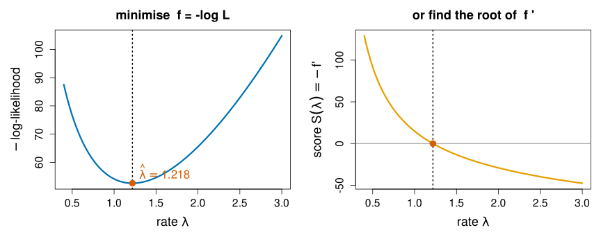
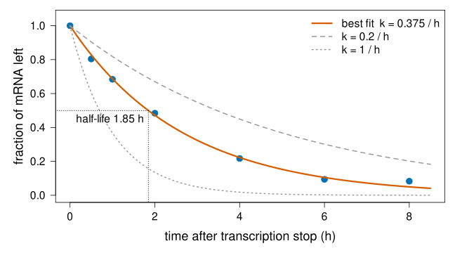
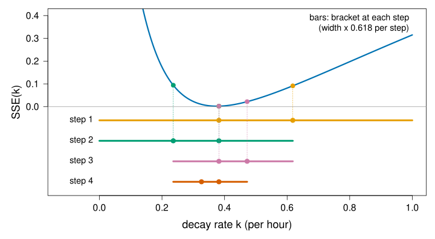
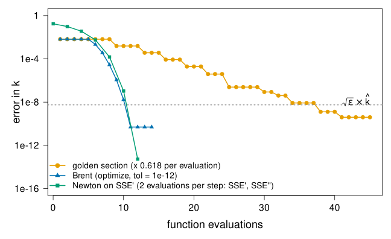
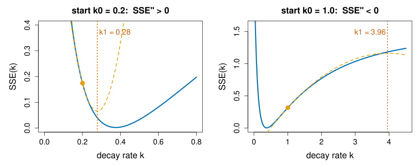
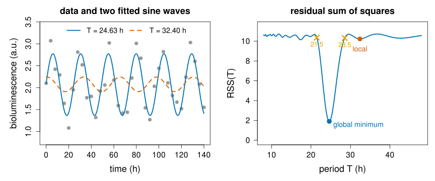

Part 9 is about fitting models: finding the parameter value that makes a model agree best with data. This lecture does it for one parameter.
A minimum of f is a root of f', but you can also search for the minimum directly, using only values of f: no derivative, and harder to fool.
Golden-section search keeps a three-point bracket and shrinks it by 0.618 per function evaluation: slow, but it cannot fail on a unimodal function.
Brent’s method (R’s optimize) adds fast parabolic steps. Newton for minimisation uses f'/f''.
Two limits: a minimum can only be located to about \sqrt{\varepsilon} \approx 10^{-8} (the bottom is flat), and every method here finds a local minimum, not necessarily the global one.
Biology: the decay rate of an mRNA from a time course (maximum likelihood with one parameter), and the period of a circadian rhythm, whose likelihood has two local maxima.
Recap: an MLE as the root of the score
From Newton and secant methods: UMI counts of a gene in the 100 cells where it was detected, modelled as a zero-truncated Poisson with rate \lambda.
The maximum-likelihood estimate (MLE) \hat\lambda = 1.218 was found as the root of the score S, with Newton and with uniroot.
But the question was never “where is S = 0?”. It was “which \lambda makes the data most likely?”
Today: answer that question directly, by maximising \ell, and see what is gained and what is lost.
Minimum versus root

Maximising \ell is the same as minimising f = -\ell (the convention of every optimiser). At a smooth minimum f'(x^*) = 0, so the minimum is a root of f'.
nll <-function(l) -(173*log(l) -100* l -100*log(-expm1(-l))) # minus log-likoptimize(nll, interval =c(0.01, 10), tol =1e-10)# $minimum# [1] 1.21847## $objective# [1] 52.61033
Why search for the minimum directly?
root of f'
minimum of f
needs
the derivative f'
only values of f
a root can be
a minimum, a maximum or a flat inflection
a minimum (lower values are always better)
bracket
sign change of f': 2 points
a low point between two higher ones: 3 points
accuracy
\sim\varepsilon relative
only \sim\sqrt{\varepsilon} relative (later slide)
Often there is no formula for f': f comes out of an ODE solver, a simulation, or a long likelihood.
Comparing two values of f tells you which one is better. A value of f' only tells you which way is downhill.
The price: we lose half of the digits. Usually that is fine for a parameter estimate.
A biology problem: how fast does an mRNA decay?
Transcription is stopped at t = 0 (actinomycin D); qPCR measures the fraction of the mRNA left.

Model: y_i = e^{-k t_i} + \text{noise}, one unknown, the decay ratek.
With Gaussian noise of constant size, the MLE of k minimises the sum of squared errors
One low valley near k = 0.4. For large k the curve flattens (all predictions near 0) and bends the other way (yellow).
Brackets for a minimum
A function is unimodal on [a, b] if it decreases to a single minimum x^* and increases after it.
A bracket for a minimum is three points a < c < b with f(c) < f(a) and f(c) < f(b): a low point between two higher ones. If f is continuous, a (local) minimum lies in (a, b).
From the grid on the previous slide: f(0) = 2.68 > f(0.5) = 0.033 < f(0.75) = 0.168. So (0, 0.5, 0.75) is a bracket; so is [0, 1] with c = 0.5.
Compare with root finding: there a sign change at two points was enough. Here two values say nothing: is the minimum between them, or beyond the lower one?
Recipe: evaluate f on a grid, take the lowest grid point and its two neighbours.
Golden-section search: the idea
Place two points x_1 < x_2 inside [a, b] and compare f(x_1) with f(x_2):
f(x_1) < f(x_2): the minimum cannot be right of x_2. Keep [a, x_2].
otherwise: keep [x_1, b].

The trick is where to put x_1 and x_2: so that one old point is reused, and each step costs one new evaluation.
Why 0.618?
Put the points symmetrically at fractions 1 - g and g of the interval, L = b - a:
x_1 = a + (1 - g)L, \qquad x_2 = a + gL .
Keep [a, x_2], of length gL. The old x_1 should be the new x_2, at fraction g of the new interval:
(1 - g)L = g \cdot gL \quad\Longrightarrow\quad g^2 + g - 1 = 0 \quad\Longrightarrow\quad g = \frac{\sqrt5 - 1}{2} = 0.6180\ldots
The bracket shrinks by 0.618 per evaluation: L_k = 0.618^k L_0. That is linear convergence with rate 0.618.
Bisection for roots: 0.5 per evaluation (\log_{10} 2 = 0.30 digits). Golden section: \log_{10}(1/0.618) = 0.21 digits per evaluation.
Golden section by hand
\text{SSE}(k) on [0, 1], four digits:
step
[a, b]
x_1
f(x_1)
x_2
f(x_2)
keep
width
1
[0, 1]
0.3820
0.00216
0.6180
0.09150
[a, x_2]
0.618
2
[0, 0.6180]
0.2361
0.09417
0.3820
0.00216
[x_1, b]
0.382
3
[0.2361, 0.6180]
0.3820
0.00216
0.4721
0.02204
[a, x_2]
0.236
Bold: the only new evaluation in each step. The other point is reused.
After 4 evaluations the minimum (\hat k = 0.3754) is in [0.2361, 0.4721].
0.382 is already close; golden section does not know that, and keeps shrinking at 0.618 per step.
Golden-section search in R
golden <-function(f, a, b, tol =1e-8) { g <- (sqrt(5) -1) /2# 0.618... x1 <- b - g * (b - a); f1 <-f(x1) x2 <- a + g * (b - a); f2 <-f(x2)while (b - a > tol) {if (f1 < f2) { b <- x2; x2 <- x1; f2 <- f1; x1 <- b - g * (b - a); f1 <-f(x1) }else { a <- x1; x1 <- x2; f1 <- f2; x2 <- a + g * (b - a); f2 <-f(x2) } } (a + b) /2}golden(sse, 0, 1)# [1] 0.3753873
One new f per pass through the loop. Width < 10^{-8} after 38 passes.
Cannot fail on a unimodal function: no start value, no derivative, never leaves [a, b].
How fast?

Golden section: a straight line on a log scale, slope \log_{10} 0.618 = -0.21 per evaluation. Linear.
Brent and Newton: superlinear, but they stall near 10^{-9} and 10^{-13}. Why the floors differ comes in a few slides.
Parabolic interpolation
Use the sizes of the three values: fit a parabola through (a, f_a), (b, f_b), (c, f_c) and jump to its vertex,
Near the minimum f looks like a parabola, so the vertex is very close: order about 1.32, superlinear.
Far away it can jump anywhere, even to a maximum (a parabola opening downwards). From (0, 0.5, 1) the next steps go to -1.51, then wander off to k = 34.
Brent’s method: a fast step on a leash
The minimiser twin of uniroot (Brent 1973):
Keep a bracket [a, b] and the three best points so far.
Try a parabolic step. Accept it if it lands inside the bracket and the steps are shrinking.
Otherwise take a golden-section step.
As safe as golden section; superlinear near the minimum. No derivative.
This is Newton’s method on f': quadratic convergence near a minimum with f''(x^*) > 0.
For the zero-truncated Poisson, f = -\ell, f' = -S, f'' = -S': exactly the Newton iteration on the score from Newton and secant methods (6 steps from \bar x).
It needs f'andf'', and it works on f', so it reaches full precision (no \sqrt\varepsilon floor).
f''(\hat x) is the curvature at the minimum. For a likelihood, it gives the standard error.
From 0.2: digits double after a slow start. From 0.7: a negative rate. From 1.0: off to k = \infty.
When Newton heads uphill

Left: f'' > 0, the local parabola opens upwards; its vertex is a good guess for the minimum.
Right: f'' < 0, the parabola opens downwards; its vertex is a maximum of q, and Newton walks away from the minimum, towards the flat plateau at k \to \infty.
Checks:f''(x_k) > 0 at every step, and f(x_{k+1}) < f(x_k). If either fails, do not take the step.
Convexity
f is convex on an interval if f''(x) \ge 0 there: the graph bends upwards everywhere, every chord lies above it.
A convex function has no separate local minima: a local minimum is the global one.
Newton’s local parabola always opens upwards, so each step points downhill. (It can still overshoot: see the exercise.)
-\ell for the zero-truncated Poisson is convex for all\lambda > 0 (-S' > 0). Any reasonable method finds \hat\lambda.
\text{SSE}(k) for the decay is convex only for k < 0.80 (the yellow region on the earlier plot). Start right of it and Newton fails.
Many likelihoods are convex in the right parameterisation (Poisson and logistic regression, in their coefficients). Nonlinear models (decay curves, ODEs, periods) usually are not.
Local versus global: a circadian period
A bioluminescence reporter of a clock gene, every 4 h for 6 days. Fit a sine wave with unknown periodT.
t <-seq(0, 140, by =4) # 36 time points (h)set.seed(15) # simulated, true period 24.5 hy <-round(2+0.6*cos(2* pi * (t -6) /24.5) +rnorm(36, sd =0.3), 2)rss <-function(T) { # best sine wave with period T X <-cbind(1, cos(2* pi * t / T), sin(2* pi * t / T))sum(lm.fit(X, y)$residuals^2) # linear least squares for fixed T}
For a fixedT, mean, amplitude and phase come from a linear least-squares fit. What is left, \text{RSS}(T), depends on T only.
With Gaussian noise, \log L(T) = -\tfrac{n}{2}\log \text{RSS}(T) + \text{const}: minima of RSS are maxima of the likelihood.
optimize returns the wrong period

optimize(rss, c(10, 40))$minimum # a plausible search range# [1] 32.40162 # a local minimum: as bad as no rhythm at alloptimize(rss, c(15, 35))$minimum# [1] 24.63047 # the global minimum
Grid first, then refine
Tg <-seq(10, 40, by =0.25) # grid finer than the dip (about 3 h wide)r <-sapply(Tg, rss)T0 <- Tg[which.min(r)]; T0# [1] 24.75optimize(rss, c(T0 -0.5, T0 +0.5), tol =1e-6)$minimum# [1] 24.63047c(rss(24.63047), rss(32.40162))# [1] 1.908081 10.225063
A grid finds the right basin; a local method (Brent, Newton) then polishes it. 121 + 10 evaluations.
The grid spacing must be smaller than the narrowest dip you care about. Too coarse and it can miss it too.
Alternatives: multistart (run from many starting points, keep the best), and always compare the objective at the candidates.
Checklist: before you trust a minimum
Plot f over the whole plausible range. How many valleys?
Bracket: give optimize an interval that contains one minimum (grid first).
Set tol (default 1.2\times10^{-4}, absolute). Do not ask for more than \sim\sqrt{\varepsilon}\,|x|.
Check the answer: not at the edge of the interval? f at the answer lower than at nearby grid points? Biologically sensible (positive rate, period near 24 h)?
Hand-written Newton: check f' and f'' against finite differences; require f'' > 0 and f decreasing at each step.
Local vs global: try several intervals or starting points; compare f at every candidate.
Summary
A smooth minimum is a root of f', but minimising directly needs only values of f, never confuses a minimum with a maximum, and keeps a three-point bracket.
Golden section: shrink by 0.618 per evaluation (linear), safe on any unimodal function. Parabolic interpolation: superlinear (order ~1.32) but unsafe. Brent = both: optimize, minimize_scalar, BrentOpt. Set tol.
Newton: x_{k+1} = x_k - f'/f'', quadratic, needs f'' > 0; otherwise it heads for a maximum.
A minimum can only be located to about \sqrt\varepsilon relative: the bottom is flat. For more digits, find the root of f'.
Convex\Rightarrow local = global. Otherwise (a circadian period) a local method can return a local minimum without warning: grid first, compare candidates.
Next:Gradient descent, Newton and quasi-Newton: many parameters, the gradient and the Hessian, and line searches.